2018.09知识梳理
相似三角形
平行线分线段成比例定理
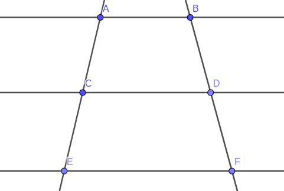
如图: AB∥CD∥EF
则有结论:
证明如下:
连接AD,DE,BC,CF

∵AB∥BC
∴SΔACD=SΔBCD
同理SΔCDE=SΔCDF
∴SΔCEDSΔACD=SΔCDFSΔBCD
SΔACD与SΔCED有着共同的高DP(DP⊥AE)
∴SΔCEDSΔACD=CEAC
同理SΔCFDSΔBCD=DFBD
∴CEAC=DFBD
推论: 直线束定理

在上图中: AB∥CD
则有结论
- OCOA=ODOB=OHOG
- CDAB=DHBG=OCOA
- CDAB=DHBG
推论: 平行于三角形一边的直线截三角形另两边所在的直线成比例
- 第一种形式

如图, BC∥DE
则有结论: ADAB=AEAC=DEBC
(即SΔABC∼SΔADE)
-
第二种形式

此时仍有(1.)中的结论
例题:
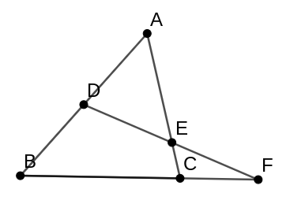
如图, D为AB中点, 求证 CFBF=ECAE
证明:

如图, 作CG∥AB 交 DF 与G
∵AD∥CG
∴ECAE=GCAD
又∵BD∥CG
∴CFBF=GCBD
且AD=BD
∴CFBF=ECAE
例题:

如图, AB∥EF∥CD
求证AB1+CD1=EF1
证明：
∵EF∥AB
∴ΔABC∼ΔEFC
∴ABEF=BCCF
同理CDEF=BCBF
相加, 得
ABEF+CDEF=BCCF+BF
ABEF+CDEF=1
同时除以EF得
AB1+CD1=EF1
三角形重心分中线为1:2两部分

如图, D,F,E分别为BC,AB,AC的中点, 即,O为ΔABC的重心
则有:
ODAO=OEBO=OFCO=12
证明如下:
如图, 连接FE.
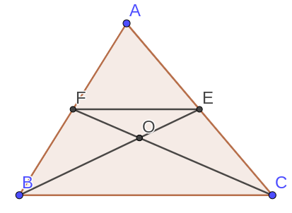
∵AF=BF
且AE=EC
∴ FE为ΔABC的中位线
∴BCFE=21,FE∥BC
∴ΔFEO∼ΔCBO
∴OFCO=12
同理可证:ODAO=OEBO=OFCO=12
思想: 通过中点作平行线构造中位线.
例题:

如图, D为BC的中点, AD是ΔABC的中线, F为AB上任意一点, FC与AD交于E.
求证:
AE×BF=2AF×DE
思路: 看到常数项2想到可以凑出2AF或者2DE但是都不容易, 考虑把2移项, 转而凑出2BF, 此时我们可以通过作DG∥AB 构造中位线得到2BF
证明
作DG∥AB交CF于G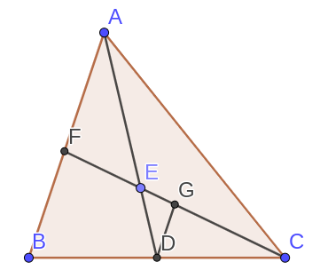
∵BD=DC
且BF∥DG
∴DG为ΔBCF的中位线
∴2DG=BF
又AB∥DG
∴EDAE=GDAF
∴AE×GD=AF×ED
其中AF=BF=2DG
∴AE×2BF=AF×DE
即AE×BF=2AF×DE
解法二
思路: 其实非要使用2DE也可以, 我们知道D是BC中点, 想到倍长中线, 使用倍长中线构造2DE
证明:
作AD的延长线DH使DH=ED
连接BH

∵ED=DH
且∠EDC=∠BDH
且BD=DC
∴ΔBDH≅ΔCDE
∴∠DBH=∠DCE
∴FE∥BH
∴FBAF=EHAE
∴AF×EH=AE×FB
其中EH=2ED
∴AE×BF=2AF×DE
例题:
如图:

D,E分别是BC的三等分点
F是AC的中点
求BP:PQ:QF
思路, 使用相等条件证明线段的位置与数量关系
证明:
连接FE
∵AF=FC
且DE=EC
∴FE 为ΔADC的中位线
∴FE∥AD
又BD=DE
∴PD为ΔBFE 的中位线
∴BP=PF
设PD=a
则FE=2a
∵AD∥EF
即ΔCEF∼ΔCDA
∴ECDC=EFAD
∴AD=ECDC×EF=2×EF=4a
∴AP=3a
又FE∥AD
∴ΔFEQ∼ΔPQA
∴QFPQ=FEAP=2a3a=23
同时BP=PF
∴BP:PQ:QF=5:3:2
三角形角平分线定理
如图
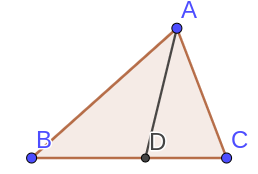
AD是ΔABC的角平分线, 有结论
ACAB=DCBD
证明如下
例题:
已知AD平分∠BAC
求证ACAB=DCBD
方法一:
思路, 利用中点构造中位线解题
证明:
作DE∥AB交AC于E
如图: ∵BD=DC
∵BD=DC
且DE∥AB
∴ED为ΔABC的中位线
又∵∠BAD=∠DAC
且AB∥DE
∴∠BAD=∠EDA
∴∠ADE=∠DAE
∴AE=DE
且ΔCDE∼ΔCBA
∴DCBD=ECAE=ECDE=ACAB
解法2:
在三角形外作平行线, 证法类似1:
证明:
作CE∥AD交BA的延长线与点E

∵CE∥AD
∴ΔBAD∼ΔBEC
∴∠BEC=∠BAD
而∠BAD=∠DAC
且∠DAC=∠ECA
∴∠AEC=∠ACE
∴AC=AE
∴DCBD=AEBA=ACBA
解法3:
思路: 等面积法, 通过作垂直利用角平分线上的点到角两边距离相等证明
证明:
作DF⊥AB于F, 作DE⊥AC于E
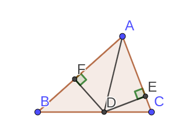
由D在BC上
SΔADCSΔADB=DCBD
又∵DF⊥AB DE⊥AC
且AD平分∠BAC
∴DF=DE
∴SΔADCSΔADB=AC×DEAB×FD=ACAB
∴SΔADCSΔADB=ACAB=DCBD
补充:
三角形外角平分线定理
如图

若AE是ΔABC的外角平分线
则ECBE=ACAB
证明如下:
例题:
已知AE平分∠BAC的补角
求证:ECBE=ACAB
证明:
作EF∥AC

∵AC∥EF
∴ΔBAC∼ΔBFE
同时AC∥EF
∴∠CAE=∠AEF
且∠CAE=∠EAF
∴∠AEF=∠EAF
∴AF=FE
∴BCBE=ABBF=EFBF=ACBA
合分比性质
若ba=dc
则
- ba+k=dc+k
- bak=dck
- b+da+c=ba=dc
黄金分割

如图, C在AB上, 如果C满足:
ACAB=CBAC
则称C点是AB的黄金分割点
例题:
已知在线段AB上有一点C满足:
ACAB=CBAC
求CBAC
解:
设ACAB=CBAC=k
AB=AC×k
AC=AB×k
AB=CB×k2
不妨设AB=1
则有AC+BC=AB
∴k21+k1=1
∴k=−1±1+42
其中k>0
∴k=−1+52=42×(5+1)=25+1
例题:
如图, 等腰三角形ABC中, AB=AC, ∠BAC=36∘, D是AC上一点, ∠CAD=36∘
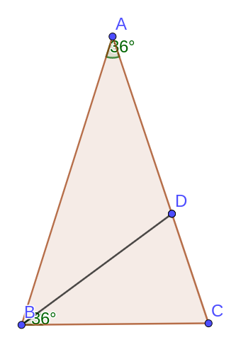
求证: D点黄金分割AC
证明:
∠ABC=∠ACB=72∘
∠BDC=72∘
BC=BD=DA
∵∠A=∠DBC=36∘
且∠ACB=∠BCD
∴ΔABC∼ΔBCD
设BC=a
则DCBC=BCAB
∴AB=DCa2
而AB=AC=AD+DC
∴a2=a×DC+DC2
即DCa=aa+DC
所以D黄金分割AC
射影定理
关于直角三角形的相似

如图, CD⊥AB,AC⊥CB则
ΔADC∼ΔCDB∼ΔACB
AC2=AD×AB
B\C2=DB×AB
CD2=DB×AD
证明:
∵∠A=90∘−∠ACD=∠DCB
且∠ADC=∠CDB=90∘
∴ΔCDB∼ΔADC
又∠CAB=∠DAC
且∠CDA=∠BCA
∴ΔADC∼ΔACB
∴ADAC=ACAB
∴AC2=AB×AD
同理可证CB2=DB×AB
又有ΔCDB∼ΔADC
∴CDAD=DBCD
∴CD2=AD×DB

如图, BCAB=65, BC=6EC, 5FC=3CD, FG⊥AE于G,
求证: AG=4GE
解法一:
证明:
设AB=5a
则BC=AD=6a
BE=5a,EC=a
DF=2a,FC=3a
AF2=AD2+DF2=36a2+4a2=40a2
EF2=EC2+FC2=a2+9a2=10a2
AE2=AB2+BE2=25a2+25a2=50a2
∴AF2+EF2=AE2
∴AF⊥EF
∴ΔAGF∼ΔFGE
而EFAF=EF2AF2=2
∴AFAG=FEGF
∴GFAG=FEAF=2
同理GEGF=2
∴GFAG×GEGF=GEAG=2×2=4
∴AG=4GE
解法2:
同1得到∠AFE=90∘
由射影定理得
EF2AF2=EG×AEAG×AE=EGAG=14
例题:

如图, BD平分∠ABC, CD平分∠ACB, AE=AF
求证EF2=4BE×CF
证明:

∵BD,CD交于D
∴AD平分∠BAC
且AE=AF
∵∠AEF=180∘−∠BED
∵∠EFA=180∘−∠CFD
∴2α+2β+360∘=360∘+∠BED+∠CFD
∴∠BED=∠CFD=α+β
∴∠EDB=β，∠FDC=α
∴ΔBED∼ΔDFC
∴EDBE=FCDF
∴BE×CF=DF×ED=2EF×2EF=4EF2
∴EF2=4BE×CF
例题：

如图, AB=AC, BD=DC, P是AD上一动点, CF∥AB
求证BP2=PE×PF
证明:
连接CP,
∵∠PEC=∠BAE+∠ABE
且∠PCF=∠PCE+∠ECF
而AB∥CF
∴∠ECP=∠BAE
∴∠PEC=∠BAE+∠ABE=∠ECF+∠ACP=∠PCF
∴∠PEC=∠PCF
且∠FPC=∠CPE
∴ΔPEC∼ΔPCF
∴PCPE=PFPC
∴PC2=PE×PF
而PC=PB
∴BP2=PE×PF
例题:

∠ACB=90∘, CD⊥AB, FH⊥AB, AC⊥CB,CF=3, FB=12
求FH的长
解:
延长AC的到G, 使GH∥CD, 连接GF
∵CD∥GH
且DE=CE
∴FH=FG
∵∠BFH=∠GFC
且∠GCF=∠BHF
∴ΔGCF∼ΔBHF
∴FGCF=BFHF
例题：
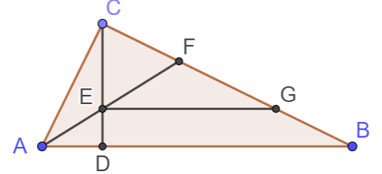
如图, AC⊥CB, AF平分∠CAB交CD于E交CB于F, EG∥AB
求证:
- EDCE=FCBF
- BF×BG=CG×CF
- CF=BG
- EFAE=EGAC
证明:
∵AF平分∠CAB
∴FBCF=ABAC
且∴EDCE=ADAC
又CD⊥AB,AC⊥CB
且∠CAB=∠DAC
∴ΔACD∼ΔABC
∴ADCA=ACAB
∴EDCE=CFBF
∵EG∥AB
∴ΔCEG∼ΔCDB
∴EDCE=GBCG
而EDCE=FCBF
∴GBCG=FCBF
即CG×FC=BF×GB
由和比性质:∴BCCG=BCBF
∴CG=BF
又有∠EAC=∠EAD
且∠EAD=∠FEG
∠FGE=∠FBD
∠ACD=90∘−∠CAD=∠CBD
∴∠FGE=∠ACE
且∠CAE=∠FEG
∴ΔAEC∼ΔEFG
∴EFAE=EGAC
例题:

如图, D为BC中点, G为ΔABC的重心,GF∥AC
已知SΔABC=36, 求SΔDGF
解:
∵G为重心
∴SΔADC=21SΔABC=18
且GDAG=12
∴SΔDFG=321SΔADC=2
例题:
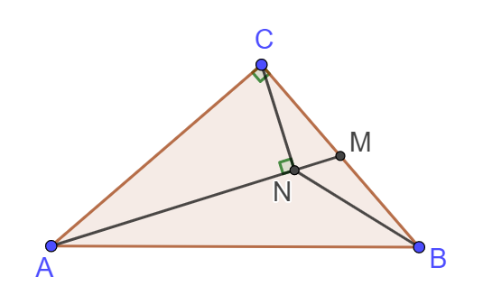
RtΔABC中, ∠ACB=90∘, CM=MB, CN⊥AM于N
求证:
∠MAB=∠MBN
∵AC⊥CM
∴ΔMCN∼ΔMAC
∴CMMN=AMCM
而CM=MB
∴MBMN=AMMB
且∠NMB=∠BMA
∴ΔMBN∼ΔMAB
∠MAB=∠MBN
例题:

在ΔABC中, ∠BAC=90∘, AD⊥BC, DE⊥AB, DF⊥AC
求证:
- AE:EB=AC2:AB2
- BE:CF=AB3:AC3
- AD3=BC×BE×CF
证明:
∵AD⊥BC,DE⊥AB,DF⊥AC
∴ΔBED∼ΔBAC
∴EBAE=BDDC
由射影定理得:
∴AB2=BD×BC,AC2=DC×BC
∴EBAE=BDDC=BD×BCDC×BC=AB2AC2
看到(2)中的三次方,考虑使用四次方并消去一个
AC4AB4=DC2×BC2BD2×BC2=DC2BD2=CF×ACBE×AB
即AC3AB3=CFBE
对于(3)中的结论,也可以使用先算四次方并消去的方法.
AD4
=BD2×DC2
=BE×AB×CF×AC
=BE×CF×(AC×AB)
由等面积法,可得 AC×AB=AD×BC
AD4=BE×CF×AD×BC
即AD3=BE×CF×BC
例题:

AD是∠A的角平分线, AD的中垂线EF与AD交于E
求证:
- CDBD=DCBF
- BC=4,CF=3时, 求DF
看到CDBD想到使用角平分线定理
CDBD=ACAB=DCBF
类似"母子相似"的结论, 考虑连接 AF 证明ΔFBA∼ΔFAC
证明:
连接AF, 如图所示
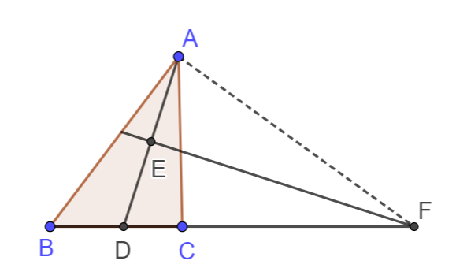
∵EF垂直平分AD
∴FA=FD,∠FAD=∠FDA
又有AD平分∠CAB
即∠CAD=∠DAB
∴∠FAD−∠CAD=∠FDA−∠BAD
∴∠ABC=∠CAF
且∠AFC=∠BFA
∴ΔFAC∼ΔFBA
ABAC=FBFA
同时FA=FD
ABAC=FBFD
ACAB=CDBD
从而得出结论
CDBD=FDFB
对于第二问,可以使用第一问的相似继续证明.
BFAF=AFCF
AF2=BF×CF
∴DF=AF=BF×CF=21
例题:
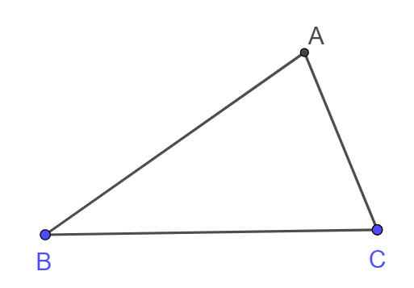
在如图所示的三角形中, 满足, ∠ACB=2∠B
求证:
AB2=AC2+AC×BC
以A为圆心, AC为半径,画弧交BC于D, 作AE⊥BC于E

在等腰三角形ΔADC中, AC=AD, ∠ADC=∠ACD
∴∠ADC=∠ABC+∠DAB=2∠B
∴∠ABD=∠DAB
∴BD=DA=AC
∴AB2=AE2+BE2
=BD2+DE2+2BD×DE+AE2
=AD2+BD2+2BD×DE
=AD2+BD×(BD+2DE)
=AD2+BD×(BD+DC)
=BD×BC+AD2
=AC2+AC×BC
例题:
在边长为2cm的正方形ABCD中, 动点E,F分别从D,C两点同时出发, 均以1cm/s的速度在射线DC, CB上运动, 连接AE与DF交于点P, Q是AD的中点, 若以APQ为顶点的三角形与PDC为顶点的三角形相似, 运动时间为?
分析:
如图
通过证明ΔDFC≅ΔAED易证PF⊥AE
∵PE⊥AE
∴AQ=QD=QP
ΔAPQ为等腰三角形
当条件满足时ΔDPC一定是等腰三角形
可以通过分类讨论哪两条边相等进而解决问题
分类讨论:
此时P在CD的垂直平分线上
而P是交点, 此时t=2
此时E在C下方
如图:

∵ΔDPE为直角三角形
$\therefore CE = CD = 2cm
t=4
不存在, 舍去
总结:
P点的轨迹如图所示


P所在的圆弧与满足DPC是等腰三角形的"两圆一线"有两个交点(A点不可能达到), 即两种情况
反比例函数
函数的定义
两个变量, 每个自变量的取值对应且仅对应一个因变量的取值.
不是所有函数都有解析式!!!
初等函数
- y=kx+b
- y=xk
- y=ax2+bx+c
等
反比例函数的定义域
定义域: x̸=0
值域: y̸=0
反比例函数的图像
如图:

-
是双曲线 (有两支)
-
关于原点中心对称, 关于每个象限的角平分线(y=x与y=−x)对称
-
k>0时, 函数在一三象限
k<0时, 函数在二三象限
-
k>0时, y随x的增大而减小
k<0时, y随x的减小而增大
前提条件: 在每个象限内!!!
-
∣k∣越大, 图像越远离原点
-
双曲线无限逼近坐标轴, 但并不相交
k的几何意义
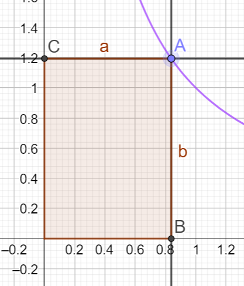
如图S□ABOC=∣ab∣=∣k∣
例题:

OA1=A1A2=A2A3, 分别过A1/A2/A3作y轴的平行线, 与反比例函数y=x4交于B1/B2/B3, 再作关于x轴的平行线,交x轴于C1/C2/C3, 求图中阴影面积之和
S1=2k=2
S2=2k×SΔB2ADSΔB2C2O=2×(OA2A1A2)2=21
同理S3=2×(OA3A2A3)2=92
S=S1+S2+S3=2+21+92
- S□=∣k∣
- 点p在双曲线上运动, 而S□不变
- SRtΔOAB=SRtΔOAC=2∣k∣=1849

- SΔOAB=S□ABDC
证明如下:
SΔOAC=SΔOBD
同时减去SΔOFC
SΔOFA=S□FCDB
同时加上SΔAFB
SΔOAB=S□ABDC
例题:

ABAO=32, SΔBOD=32
求y=xk
解:
作AE⊥OC于点E
∵AE⊥OC,BC⊥OC
∴AE∥BC
∴ΔOEA∼ΔOCB
又有ABOA=32
∴SΔOCBSΔOEA=254
∴SΔADB=SΔOAD+SΔADB=S□ADCE+SΔADB=S□ABCE
∴S□ABCESΔOEA=214
∴SΔOEA=S□ABCD×214=4
∴k=2×ΔOEA=8
故而y=x8
例题

OB=4,OA=3, 反比例函数y=xk交AC与E, 交CB于F
- 求证SΔAOE=SΔBOF
- S=SΔOEF−SΔECF, 求k为何值时, S取得最大值, 最大值是多少?
证明:
SΔAOE=2k
SΔBOF=2k
设 E(3k,3) F(4,4k)
SΔOEF=(4−3k)(3+4k)×21
SΔECF=(4−3k)(3−4k)×21
S=k−12k2=−121(k2−12k+36)+3=−121(k−6)2+3
当k=6时, S取得最小值为3
- 下图中, 如果A为CE中点, 则B为CE中点
- 扩展: BDEB=CAAE

证明:
如图:

S□OFAC=S□ODBH
同时使用SODEC减去
得到S□HBEC=S□FDEA
S□HBEC与S□ODBH有着相同的长
S□ODBHS□HBEC=DBBE
同理S□OFACS□FDEA=CAAE
CAAE=S□OFACS□FDEA=S□ODBHS□HBEC=DBBE
与一次函数判断大小
- 类似下图的
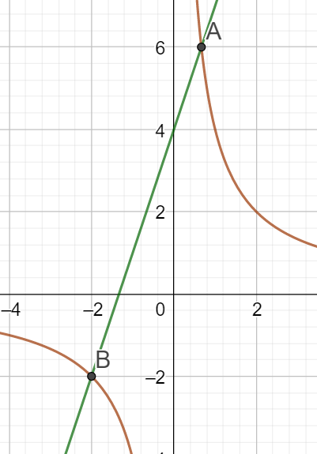
即
y1=x4
y2=3x+4
应当分段考虑, 将x>0时y2的函数值与y1的上半段比较:
| 自变量 |
因变量 |
| x>32 |
y1<y2 |
| x=32 |
y1=y2 |
| 0<x<32 |
y1>y2 |
| −2<x<0 |
y1<y2 |
| x=−2 |
y1=y2 |
| x<−1 |
y1>y2 |
对于x<0的类似处理
- 类似下图的

y1=x4
y2=−x+8
| 自变量 |
因变量 |
| x<0 |
y2>y1 |
| x<4−23 |
y2<y1 |
| x=4−23 |
y2=y1 |
| 4+23>x>4−23 |
y2<y1 |
| x=4+23 |
y2=y1 |
| x>4+23 |
y2>y1 |
反比例图像与线段或其他图形相交的问题
边与坐标轴平行的直角三角形
例题:

如图A(1,4),B(4,1),C(4,4)
y=xk 与三角形有焦点，求k的取值范围
函数经过A点时, k=4
函数经过B点时, k=4
函数经过C点时, k=16
⎩⎪⎨⎪⎧k>4k>4k<16∴4<k<16
总结:
- 对于每个顶点求出反比例函数经过时k的取值
- 联立不等式求解
线段
例题:
已知点A(1,2)点B(4,1), 若反比例函数y=xn的图像与线段AB有公共点, 求n的取值范围
思路:考虑函数经过端点的情况和线段时函数的切线的情况
解答:
函数经过A点时, n=2
函数经过B点时, n=4
线段所在的直线是反比例函数的切线时
y=−31x+37 与函数 y=xn有且仅有一个交点
x2−7x+3n=0
Δ=49−4×3n=49−12n
Δ=0时, 两个函数有且仅有一个交点
n=1249
此时交点的横坐标1<27<4, 在线段AB上
有:
⎩⎪⎨⎪⎧n≤2n≤4n≥1249得到: 2≤n≤1249
总结:
对于线段来说
- 取反比例函数经过两个端点时k的值
- 取该线段所在的直线是反比例函数的切线时k的值 (条件: 交点在线段上)
- 联立不等式, 求出k的取值范围
利用反比例函数的对称性
例题:

如图, 一次函数与反比例函数交于A,B, 与坐标轴交于M,N, A,B向坐标轴作垂线, 交坐标轴于C,D,E,F.
求证:
- S□AEDK=S□CFBK
- AN=BM
证明:
∵S□AEOC=S□BDOF=k
∴S□AEOC−S□DKCO=S□BDOF−S□DKCO
∴S□AEDK=S□BKCF
连接 DC,AD,BC

∵SΔADK=SΔBKC=2S□AEDK
∵SΔDKC=SΔDKC
∴SΔDCA=SΔDCB
∴DC∥AB
∴AC∥y轴
∴□ANDC为平行四边形
同理□BMCD为平行四边形
∴DC=AN
∴DC=BM
∴AN=BM